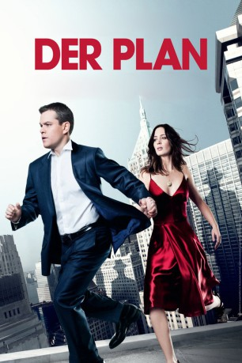
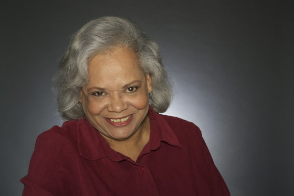
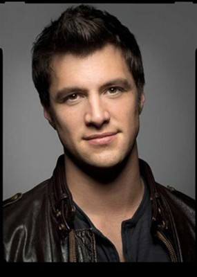
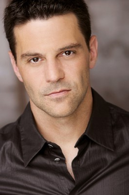

#959 Der Plan
Alternativ: The Adjustment Bureau
 
 IMDB-Wertung: 7.1 / 10
IMDB-Wertung: 7.1 / 10  Metascore: 60
Metascore: 60 
Jung, ehrgeizig und erfolgreich steht David Norris am Beginn einer exzellenten politischen Karriere. Doch mit einer prickelnden Liaison setzt er alles aufs Spiel: Er beginnt eine leidenschaftliche Affäre mit der fragilen Tänzerin Elise – ohne zu ahnen, welchen Preis er dafür bezahlen wird. Als er erkennt, dass er nur eine Marionette auf einer gigantischen Bühne ist, ist es zu spät und sein bisheriges Leben beginnt sich aufzulösen ...
Jahr: 2011
Dauer: 106 Minuten
FSK: 12
Land: USA Studio: Universal PicturesTonspuren: DTS - ,
Untertitel: Deutsch,
Auflösung: 1080p (1920x1040) Größe: 6932 MB
Genre: Liebe, Sci-Fi, Thriller
Regisseur: George Nolfi
Drehbuch: George Nolfi, Philip K. Dick
Soundtrack: Thomas Newman
Darsteller:
 Matt Damon als David Norris
Matt Damon als David Norris Emily Blunt als Elise Sellas
Emily Blunt als Elise Sellas Michael Kelly als Charlie Traynor
Michael Kelly als Charlie Traynor- Phyllis MacBryde als Suburban Neighbor
 Natalie Carter als Suburban Neighbor
Natalie Carter als Suburban Neighbor Jon Stewart als Jon Stewart
Jon Stewart als Jon Stewart- Darrell Lenormand als Upstate Farmer
- Michael Bloomberg als Mayor Michael R. Bloomberg
 RJ Konner als Political Consultant
RJ Konner als Political Consultant Anthony Mackie als Harry Mitchell
Anthony Mackie als Harry Mitchell- Gregory Lay als Albert, Campaign Aide
 James Carville als James Carville
James Carville als James Carville John Slattery als Richardson
John Slattery als Richardson Amanda Warren als Senior Campaign Aide
Amanda Warren als Senior Campaign Aide Anthony Ruivivar als McCrady
Anthony Ruivivar als McCrady- Laurie Dawn als Norris Supporter
- Christine Lucas als Charlie's Assistant, Christine
- Jim Edward Gately als Man in Madison Square Park
-  Venida Evans als Bus Passenger
- Julie Hays als Susan, RSR Receptionist
- Fabrizio Brienza als Miller
 David Bishins als Burdensky
David Bishins als Burdensky- Kate Nowlin als Junior Partner
- Rob Yang als Junior Partner
 Jennifer Ehle als Brooklyn Ice House Bartender
Jennifer Ehle als Brooklyn Ice House Bartender Pedro Pascal als Maitre D' Paul De Santo
Pedro Pascal als Maitre D' Paul De Santo- Michael Boyne als New Leaf Waiter
 Peter Epstein als Taxi Driver
Peter Epstein als Taxi Driver Brian Haley als Police Officer Maes
Brian Haley als Police Officer Maes- Jessica Lee Keller als Lauren, Elise's Best Friend
- Donnie Keshawarz als Donaldson
- Kieran Campion als Donaldson's Aide
 Terence Stamp als Thompson
Terence Stamp als Thompson- Sandi Carroll als Orthopedic Surgeon
-  Shane McRae als Adrian Troussant, Elise's Fiancé
- Meghan Andrews als Cedar Lake Receptionist
- Sandra Berrios als Court Registrar
-  David Alan Basche als Thompson's Aide
 Joel de la Fuente als Thompson's Aide
Joel de la Fuente als Thompson's Aide- Mike DiSalvo als Thompson's Aide
 Jason Kravits als New Yorker in Courthouse Lobby
Jason Kravits als New Yorker in Courthouse Lobby- Lawrence R. Leritz als Court Officer
 Peter Benson als Bureau Headquarters Staff
Peter Benson als Bureau Headquarters Staff- Leroy McClain als Bureau Headquarters Staff
- Brit Whittle als Bureau Headquarters Staff
- Lorenzo Pisoni als Bureau Headquarters Staff
- Purva Bedi als Daughter in restaurant , uncredited
- Harold Bridgeforth als Norris Supporter , uncredited
- Laura Chinn als Lora, Orivela's Waitress , uncredited
- Marmee Cosico als Club Goer , uncredited
Datei: X:\2011(N-Z)\Plan, Der (2011, FSK12, 1920x1040).mkv seit 28.04.2015
Festplatte: HD 2011(G-Z)
 Es gibt insgesamt 132 Filme in der Gruppe '2011(N-Z)'
Es gibt insgesamt 132 Filme in der Gruppe '2011(N-Z)'